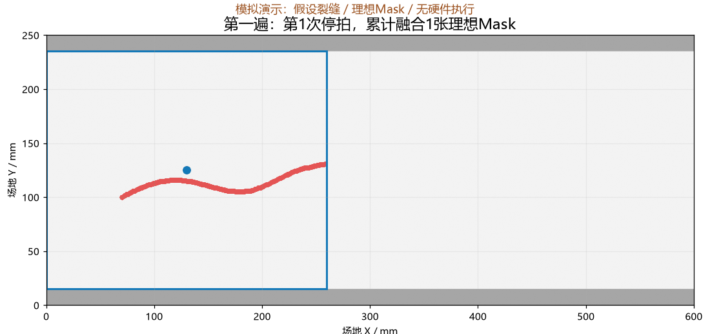
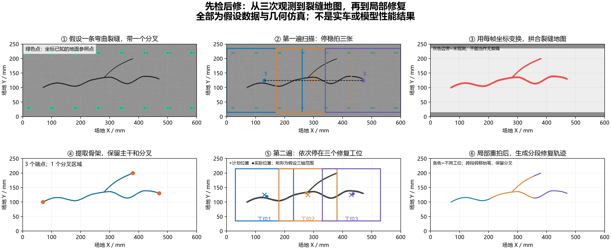
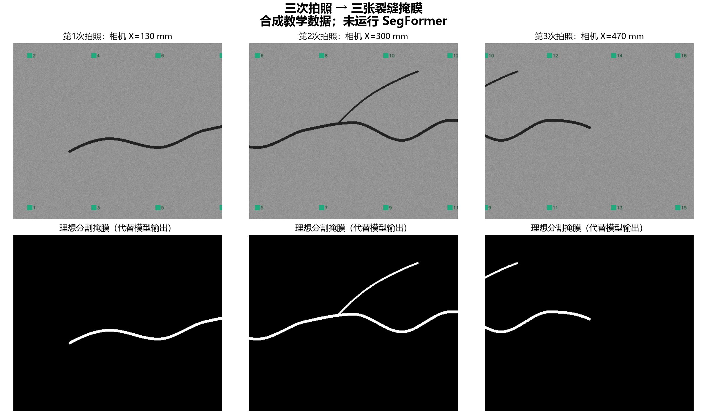
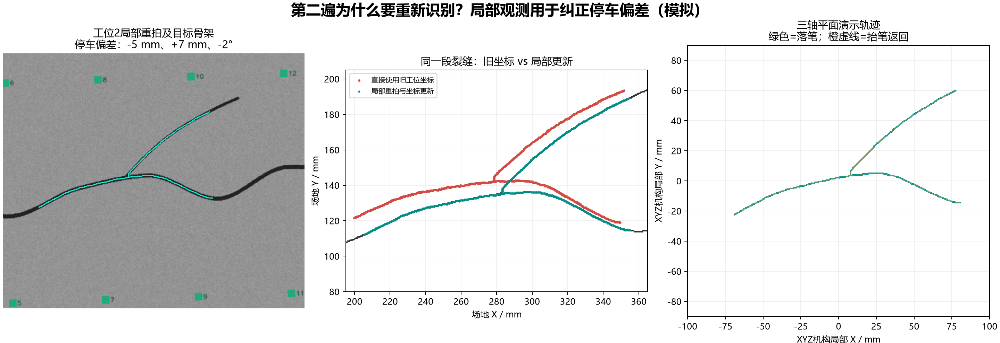

一条裂缝，如何从拍照变成修复轨迹？
教学仿真，非实车实验。 所有场景、位姿及标定参数都是假设。Mask是理想分割占位，未运行SegFormer；没有控制机器人。图中小误差不代表真实系统精度。
三次停拍 → 理想裂缝Mask → 用坐标拼图 → 保留骨架分叉 → 三个粗定位工位 → 局部重拍与三轴演示轨迹。
第一遍
3张有重叠的照片
分割作用
指出哪些像素是裂缝
定位作用
决定照片放到哪里
第二遍
停车后重新对准
按时间顺序播放

六步总图

照片与分割结果
下面的白色Mask来自合成几何，演示的是未来真实模型输出的接口。

为什么到位后还要拍一次？
本例故意给停车加入毫米级偏移和角度误差。绿色路径由局部观测重新计算；橙色虚线表示抬笔转移，避免跨分叉直接出胶。

详细说明 · 真实运行的模拟结果JSON · 位姿记录示例 · 程序校验